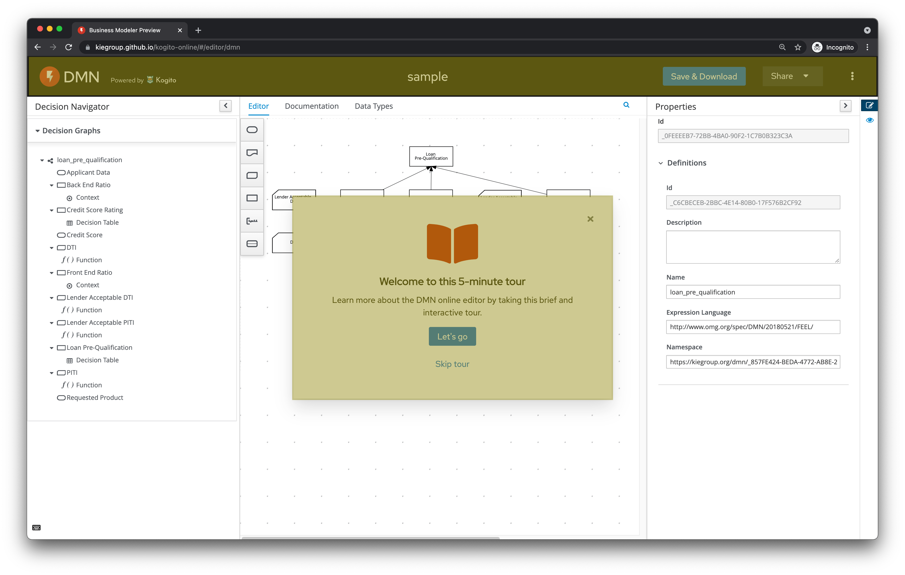
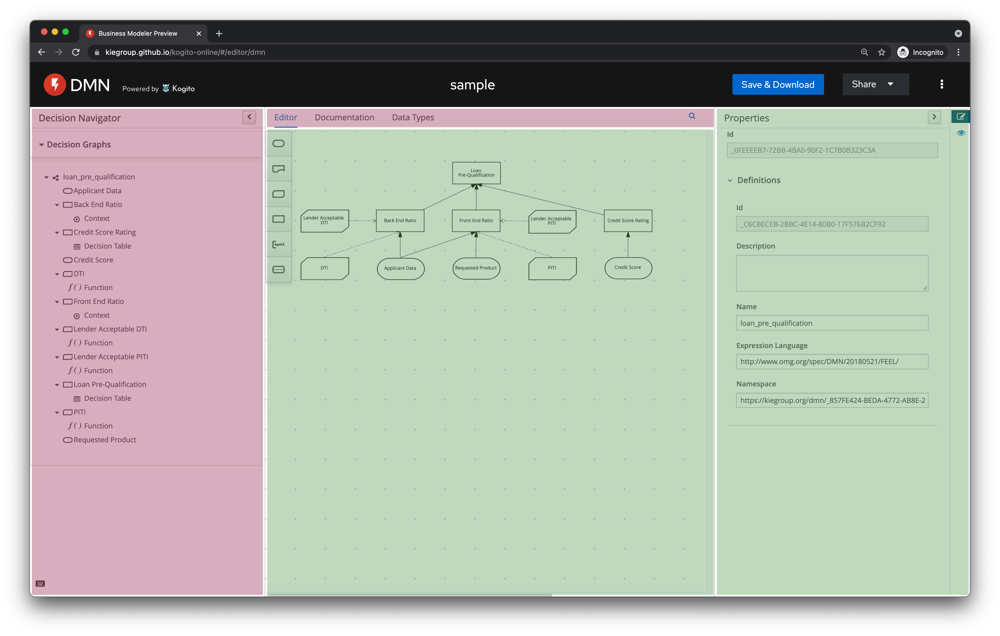
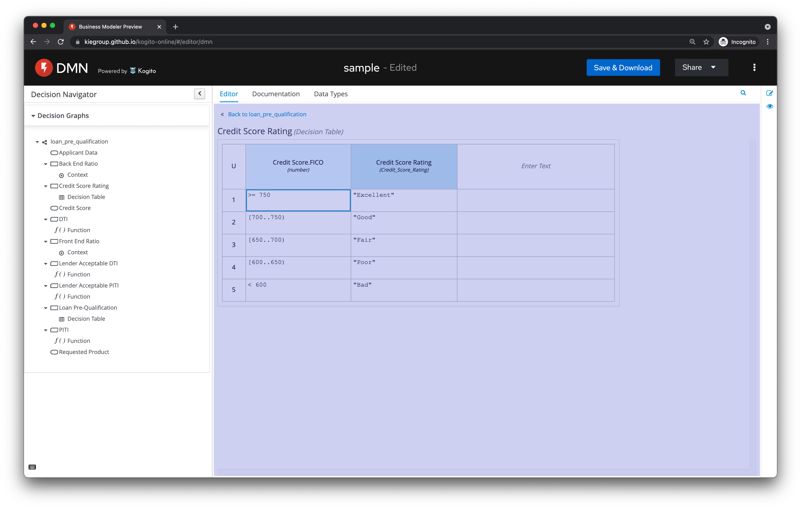

DMN editor – Contributors Guide – Part 1
If you’re reading this, probably you’ve already thought about contributing to an open-source project. However, projects generally have some learning curve, which may intimidate valuable contributors.
We do not want that feeling for the DMN editor!
So, this is the first of a series of posts that will quickly empower you to contribute to the DMN editor and other Kogito components. You will be able to solve any annoying (but simple-to-solve) bug that you want! Or even propose a more significant change on some web component.
Are you excited too? So, this guide is for you! 😃
The idea is not to overwhelm this experience, so let’s take baby steps and understand one thing at a time.
Today, we will take a look at the editor’s overall anatomy and where each component lives and, with that simple introduction, you will be able to make your first contribution! But, first, let’s take a look at the 3 kinds of modules that compose the DMN editor.
I. The TypeScript modules
As you’re probably wondering, TypeScript (TS) components are based on React. Check the elements highlighted in the image below, they are all TS/React:

Almost every TS module in the DMN editor lives here: github.com/kiegroup/kogito-tooling/tree/master/packages. As they have pretty expressive names, it’s easy to find, for example, where the Guided Tour code lives ;-)
Notice: those modules may be moved, so this link may be updated in the future.
II. The Java modules
Java modules currently rely on Google Web Toolkit (GWT) to translate Java components into JavaScript code. If you wondering about contributing into this modules, keep in mind when have two main parts here:

- The DMN components, highlighted as red – which are specific to the DMN editor
- The Stunner components, highlighted as green – which comprehends components handled by Stunner, which is multi-purpose modeling tool that powers the DMN editor and the BPMN editor
There’s other interesting sub-modules into these two sections, but the idea is to not dig too deep right now, and you will realize better on future posts how these components deeply work.
However, if you’re brave enough for an early contribution, you may check DMN component here and Stunner components here.
III. The models in transition
Some modules are being moved from the Java/GWT world to the new stack based on TS/React. Currently, only boxed expression editor is being moved:

The new component, right now, leaves on this fork, feel free to take a look or submit a PR
All that’s all for now!
But, maybe you’re wondering… How does this post help me?
Well… now that you know where each component lives, you’re already empowered to fix issues like this one: KOGITO-2618:
[Guided Tour] Dialog must show scrollbars on small screens. You just needed to know the right place for the CSS height property.
As I mentioned. This post is the first one of a series. Here we covered languages, and the overall editor anatomy, but only minimum stuff, so you can easily understand where you can open your first PR.
In the following posts, we will go beyond and check each kind of module with more details.
Stay tunned!